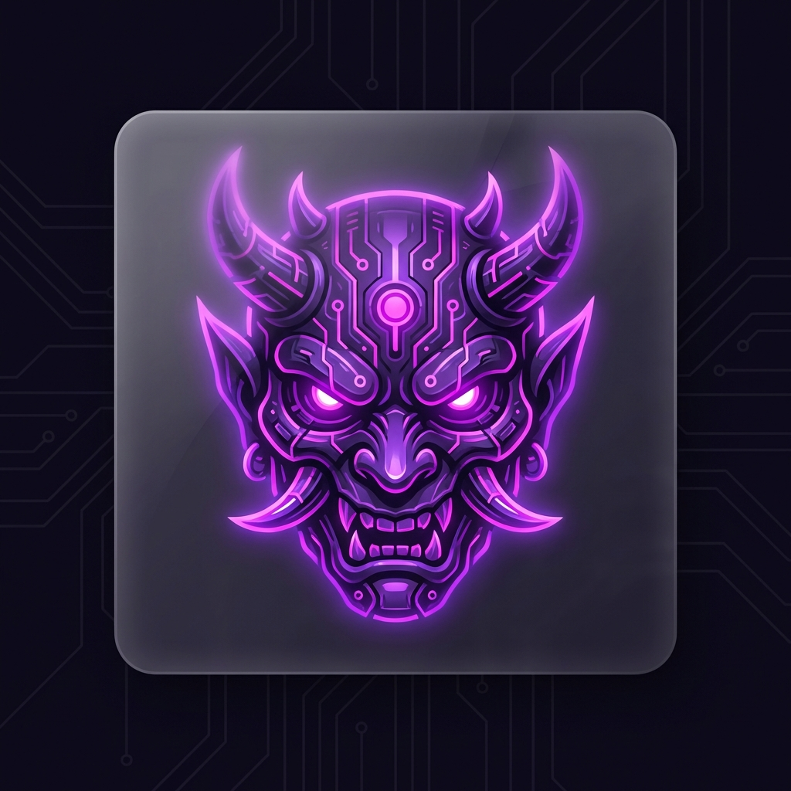

Масштабируйте свой контент в Telegram
Профессиональный инструмент для автоматического клонирования каналов, обхода ограничений и глубокой аналитики контента.
Премиум Возможности
Video Note Support
Эксклюзив! Полная поддержка и автоматическая конвертация "Кружочков".
⚡
Клонирование 24/7
Мгновенная репликация постов из донорских каналов в ваши цели без задержек.
🖼️
Поддержка медиа
Полная поддержка фото, видео, документов, аудио и сложных медиа-групп (альбомов).

Channel ID Sniffer
Перехватывайте ID любых приватных каналов в реальном времени. Просто подпишитесь, и ID у вас.
🪄
Умные фильтры
Автоматическое удаление кнопок, замена ссылок и очистка текста на лету.
⚙️
Админ-панель
Управляйте парами и настройками прямо из Telegram через мощное инлайн-меню.
Как это работает
01
Установка
Запустите инсталлятор в один клик.
02
Настройка
Добавьте ваши ключи и токен бота.
03
Запуск
Добавьте пары каналов и наблюдайте за потоком контента.